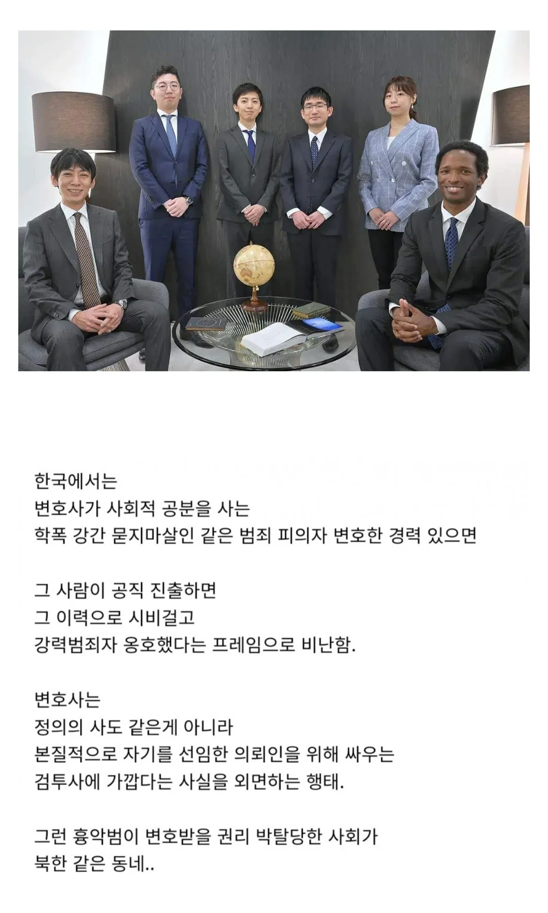
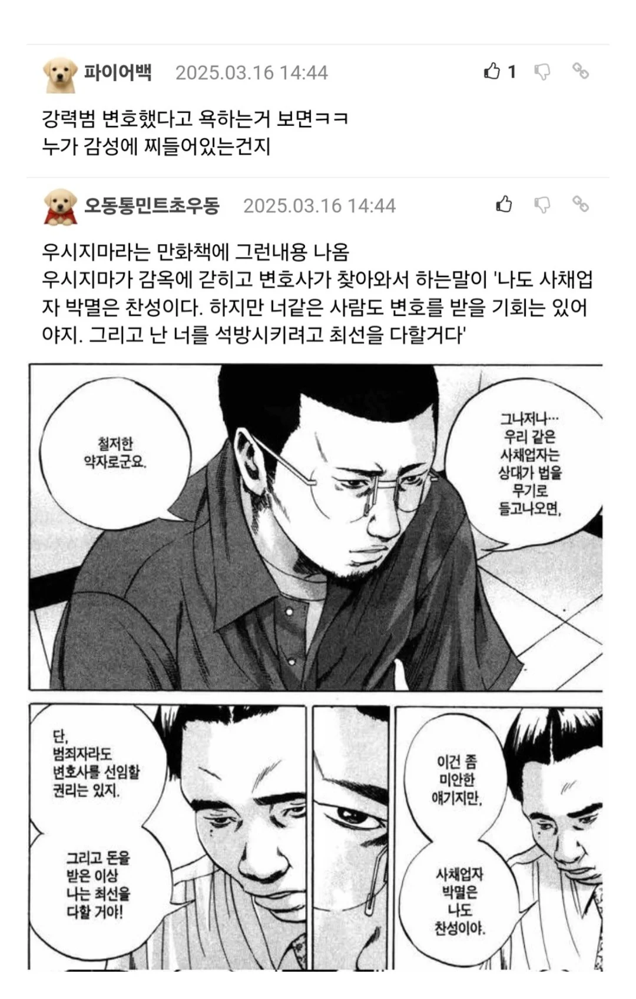

변호사는 정의의 사자가 아니라 검투사에 가까운데


변호사는 정의의 사자가 아니라 검투사에 가까운데
Ai로 가즈아
말은 바로 해야지
그걸 본인들이 검투사가 아닌 것처럼 포장해서 어필해왔잖아?
그 의무조차 다 하지 않는 먹튀들도 요새 많이 거론되는데 정의는 무슨...
미국이나 일본등 변호사가 흉악범들 변호하면 악마같은 변호사어쩌고 하면서 온갖 욕을 다 처먹는거 모르는건가..
우시지마에서 저런 장면이 왜 나오겠어
일본에서도 나쁜놈 변호하면 욕처먹으니깐 나오는거잖아
공직에 출마하니 욕먹는거지 ㅋㅋ
이익을 추구하는 검투사 이미지인 걸 외면하는 게 아니라
오히려 알고 있으니 그걸로 물어뜯기는거임
ㄹㅇ 변호사로 계속 남는다면 그건 신념이지만, 출마하면 개소리가 되는거지.
변호사만 할거면 상관 없는데 공직을 하니까 욕하는거지
서로 요구하는 도덕 수준의 잣대가 다른데 ㅋㅋㅋ
저번에도 느꼈지만 인권변호사로 포장하다가 조폭들 변호한 사람 쉴드치는거 처럼 느껴짐
그걸 모르는 사람들만 욕하는 것 같음? ㅋㅋ
법의 허점을 악용해서 범죄자들 형량 깎아 사회에 빠르게 풀어놓는걸로 돈 버는 직업인데 대중의 비난은 걍 당연히 따라붙는 세금이라고 생각해야지
판사가 씹새끼인 경우가 훨 많은데
이거 대놓고 ㅇㄱㄸ 아니냐
변호사로서 살면 유능한거고 변호사로서는 욕 안하지
근데 공직은 하면 안되지 ㅋㅋㅋㅋ
변호사 출신 정치인중에 좋은놈을 못봄
타 전문직 대비 변호사 부부가 적고 이혼률도 높다잖아
이유가뭐겠어 직업에 따른 성향인거지
공돌이는 너드고 격투기하면 남성적이고 호전적이고
뭐 그런 인간의 특징인거지
그리고 변호사도 본인이 수임할지 택할 수 있고
어떤 사건을 맡을지는 본인 성향에따라 갈리는데
국선변호사라서 한거면 어느정도 인정이지만
돈 다받고 어떻게든 형량 줄이려고 편법을 드나들고 노력한거면
그 노력이 곱게 안보이는것도 사실
법적으로 문제없는거면 부동산 투기꾼도 욕하면 안됨
다단계 사이비 종교인 다 욕하지마
ㅇㅇ권력도 얻고 싶어서 공직 진출하는건데, 그냥 변호사 평생 하면 아무도 욕 안함.
나 이런일 하는 변호삽니다.이런일 있을때 연럭주세요=전문성 있어보임
나 변호사때 이런일 했고 이제 정치 할래요=동내건달이 맛집 열게요 이미지
용병이라고 봐야지
잇쇼켄메이로군
변호사들 국회로 너무 많이 보내면 안됨 법을 잘 아니까 법제정 이런건 좋은데
병신들이 나쁜짓은 맞는데, 법률적으로 죄는 아닙니다
이딴식으로 계속 프레임 쌓아서 지치게함
국 열 명 다 그런식임
죠죠 스탠드로 인식하면
이해가쏙쏙
국선변호사라서 어쩔 수 없이 맡은거면 몰라도 자기 의지로 흉악범 사건 맡아서 변호했는데 '변호사'로서는 직업윤리가 있다고 할 수 있어도 '공직자'로서는 직업윤리가 있다고 하면 안되지 구분이 안되나
변호사들이 검찰폐지 좋아하는게 자기들 수입 늘어난다고 해서 그런거라는데 맞나?
유튜브 변호사 피셜 2배이상 늘엇다네..
변호사 : 어이 의뢰인 네 아이를 임신했다 (변호사를 믿기)
변호사도 거부할 권리가 있음
저런일을 위해서 국선변호사가 있는거야
돈받는 변호사가 할말은 아님
리갈하이 생각나네
민의라면 뭐든 옳은거냐는 코미카도의 변호.
그리고 사실 민의고 나발이고 그놈이 진짜 범인이었다는게 유머 ㅋㅋ
댓글보니 여전히 답이 없군 ㅋㅋㅋ
근데 그것도 맞다고 생각함.
애초에 정치와 투표와 정치인은 이성적이고 합리적인게 아니고
감성적이고 감정적이고 프로파간다적인 인기투표인게 유구한 역사였으니,
그 틀을 완전히 깨트릴 수 있는게 아니라면
과거에 허물이 하나라도 있으면 그 허물로 정치인에서 탈락할 각오도 해야하는 듯...
검투사도 이기나 지나 욕먹는데 이게 뭔 등신같은 논리지? 본분이 검투사면 뭐 어쩔건데 병신들아 ㅋㅋ
인권변호사 터이틀을 쓰니 문제지
변호사 출신 옳그떠들 봐봐라
당최 똑바로 된 새끼들이 있는지 ㅋㅋㅋㅋㅋㅋㅋ
변호사 계속 하면 누가 뭐라 함
근데.. 다른 직종 출신 옳그떠중엔 똑바로된 새끼들이 있나?? 애초에 있긴한가..?
확실한 건 군인, 변호사는 거르는게 맞는 듯 ㅇㅇ 표본들이 너무 많음
특히 변호사들은 21세기 들어 줄줄이 큰그떠까지 찍었는데 전부 나라 반쪼가리로 찢어버리는 거 외에는 대단한 업적도 없음. 심지어 내란맨도 있고
법조인 새끼들은 큰그떠 하면 안됨 ㄹㅇ
옳그떠는 모자이크 용도가 아니에요
이런식으로 쓰는거 자체가 규칙 위반이야 병신아
변호사가 흉악범을 돈받고 변호해놓고, 공직자 된다음에도 흉악범이더라도 법의 보호를 받을 최소한의 권리는 있다고 주장을 하면 옳은말이고 표리일체 아닌가?
오히려 본인은 과거에 흉악범 변호해놓고, 저런놈들은 법이고뭐고 다 조져야합니다 하는놈이 더 위험할듯.
차라리 위법만 교묘하게 피하려는 법기술자가 그런 능력을 공직에서 발휘하는게 문제지.
그럼 당연히 표면적으로라도 정의의 사도인 척이라도 하는 사람이 공직에 진출해야지
검투사가 공직에 진출하는게 맞냐?
뭔 말같지도 않은 소릴
?
법 용병
댓글에 병신들 많네
공직은 유권자의 감성이 표심이라는 항목으로 들어가니까 어쩔수없이 공직에서는 불이익 받을수밖에 없지
그냥 현실이 그러함ㅋㅋㅋ 인간이라는 동물자체가 이성적이면서도 감성적이고 종잡을수없는 존재임
어딜가나 똑같은데 ㅋㅋㅋ
호랑이 보다 무섭
변호사 입으로 정의니 뭐니 안하면 검투사같은 변호사라도 상관없음
대한민국에서 법가지고 일하는사람이 욕을 먹는건 법으로 정의를 구현하니 뭐니 하는 허황된 소리를 해서 그럼
대부분의 변호사 광고나 홍보문구 등에서 정의라는 키워드 쓰는 경우 거의 없음
있다면 그건 인권변호사나 공적 업무 하는 변호사임 (피해자 단체 소송)
민주주의와 투표라는 게 결국 개개인이 자기 가치관에 따라 행사하는 거라, 그 기준이 아무리 이해 안 가도 남이 뭐라 할 수는 없지. 예전에 “저 사람은 어느 대학 출신이라서 안 찍는다”, “개신교인이 아니라서 안 찍는다”는 말도 들어봤는데, 그냥 “아, 소데스까” 하고 넘어갔음.
그런데 댓글을 보면 변호사를 무슨 《베터 콜 사울》처럼 범죄를 적극적으로 종용하고 판사까지 속여 가며 범죄자를 풀어주는 사람으로 생각하는 경우가 많네. 형사변호의 기본은 의뢰인에게 법적으로 보장된 권리가 제대로 지켜지는지 확인하고, 그 권리를 대신 주장하는 것임. 내 보험회사 직원이 내 입장에서 상대 보험회사와 다투는 것과 비슷하다고 보면 됨.
나도 인터넷이나 TV에서 강간범 같은 흉악범이 솜방망이 처벌을 받았다는 소식을 보면 화남. 그런데 실제 재판이 어떻게 돌아가는지 보면 변호사가 마음대로 형량을 깎거나 범죄자를 풀어줄 수 있는 구조가 아님. 최종적으로 판단하고 형을 정하는 사람은 판사임. 변호사가 피고인의 권리를 주장했다는 사실 자체를 공직 결격사유로 보기는 어렵다고 생각함.
물론 앞서 말했듯 “개신교인이 아니면 안 찍는다”는 사람처럼, 누구에게 표를 주지 않을지는 각자의 선택이지. 다만 그 선택의 근거가 형사변호인의 역할에 대한 오해라면 그건 짚고 넘어갈 필요가 있음.
정 피고인이 변호받는 꼴 자체가 싫다면 개헌해서 범죄자는 변호사를 선임할 권리도 없애고, 고문해서 자백받은 다음 “네 죄를 네가 알렸다” 하며 원님재판이라도 하자. 도파민은 존나 터지겠네. 뿌르르르르르히.
능력있는 변호사는 범죄자도 무죄로 만드는 마성의 능력을 가지고있고
능력없는자는 피해자가 구제받을 길을 없애버리고
범죄자를 무죄로 만들 수 있는 건 범죄자의 재력과 지위 그리고 판사의 갬수성입니다.
검사랑 싸우려면 검투사정돈 되야지 암
국선 제외, 흉악범이나 권력부패 변호하면 대중에게 사랑받고 존경받을 생각은 포기해야지. 대신 돈은 벌어가시고. 누칼협